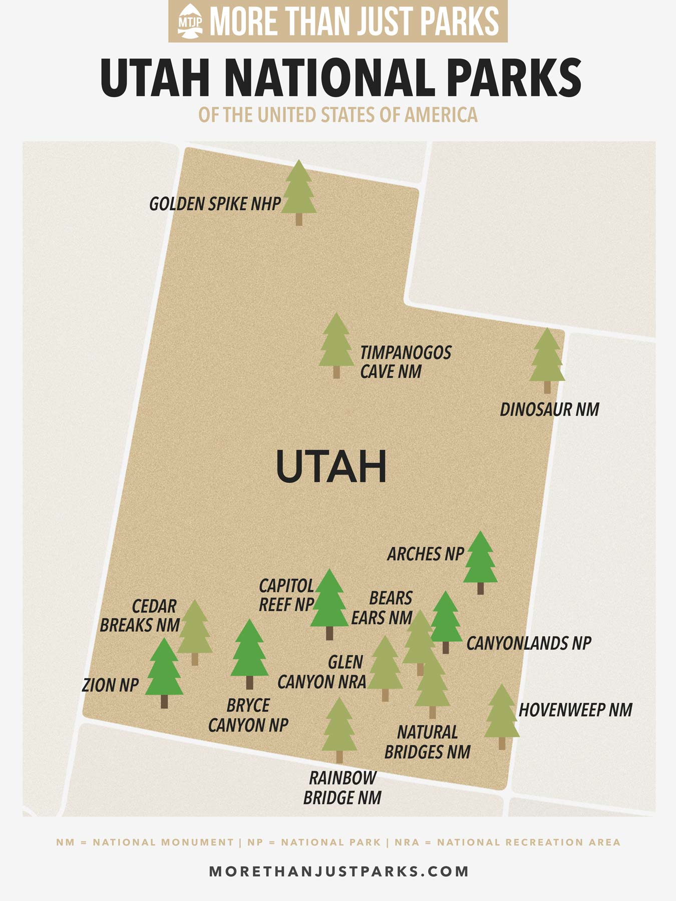

- Arches National Park Famous for having the world's largest concentration of natural sandstone arches, with over 2,000 arches scattered across its 76,000 acres. Popular attractions include Delicate Arch, Landscape Arch, and Devils Garden. It offers excellent hiking, photography, and scenic driving opportunities. Moab is the nearby hub for lodging and services.
- Bryce Canyon National Park Known for its extraordinary hoodoo formations—thin spires of rock formed by erosion. The amphitheater-style terrain glows vividly at sunrise and sunset. Key activities include hiking trails like the Navajo Loop and scenic viewpoints such as Sunset and Sunrise Points. Bryce’s diverse ecosystems also support rich wildlife viewing.
- Canyonlands National Park Utah’s largest national park, encompassing vast canyons carved by the Colorado and Green Rivers. It is divided into four districts: Island in the Sky (panoramic overlooks), The Needles (rugged hiking terrain), The Maze (remote wilderness), and the rivers themselves. The park suits those seeking solitude, off-roading, hiking, and river adventures.
- Capitol Reef National Park A stunning, lesser-visited park marked by the Waterpocket Fold—a nearly 100-mile-long wrinkle in the earth’s crust. It features cliffs, domes, natural bridges, and historic orchards in the Fruita area. Visitors enjoy scenic drives, hiking, petroglyph viewing, and fruit-picking in season.
- Zion National Park Utah’s most visited park, Zion is famous for towering red sandstone cliffs and slot canyons. Iconic hikes include Angels Landing and The Narrows, with diverse trails for all skill levels. The park’s lush valleys contrast dramatically with the desert surroundings, making it a stunning destination year-round.

The Picture on the left are Utah National Park.
Facts:
Many parks are located in high desert terrain with significant elevations, ranging from roughly 4,000 to over 10,000 feet. Visitors should be prepared for temperature swings and altitude effects..
Due to high popularity, parks like Zion and Arches require reservations or timed entry permits for certain hikes or park access during peak seasons.
The parks are relatively close to each other, making multi-park road trips feasible and popular. Moab and Springdale serve as common gateway towns.
The best times to visit are spring and fall for mild weather and smaller crowds. Summer can be hot, and winter brings snow and fewer visitors. Hiking preparation, hydration, and early starts are advised.
Early Beginnings and National Monuments The history of Utah’s national parks starts before the creation of the National Park Service (NPS) in 1916. The earliest monument, Natural Bridges National Monument, was established by President Theodore Roosevelt in 1908 to protect three impressive natural stone spans. Soon after, in 1909, Mukuntuweap National Monument was created, later renamed Zion National Monument in 1918, which became Utah’s first national park in 1919 under President Woodrow Wilson. Other early monuments include Rainbow Bridge National Monument (1910) and Dinosaur National Monument (1915), protecting both sacred natural features and significant paleontological sites.